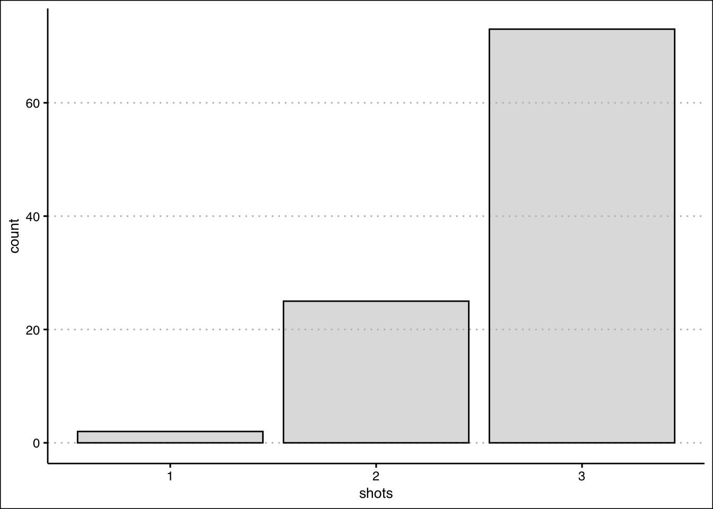

9 Probability II
Studying discrete probability distributions is essential for understanding and predicting outcomes in uncertain scenarios, particularly in business, finance, and data science. These distributions model events with distinct, countable outcomes, such as customer purchases, defect counts, or market trends, enabling decision-makers to quantify risks and optimize strategies. Below, we introduce some popular distributions and their business application.
9.1 Random Variables
The study of probability distributions begins with a random variable. A random variable assigns a numerical value to each possible experimental outcome. The table below presents a collection of experiments along with their corresponding random variables.
For restaurant owners, the number of customers they attract is a crucial variable to monitor. Tracking this variable and its possible values helps in making informed business decisions. Below we will study how this type of experiment and several others behave, so that we can make better decisions. Note that since the outcomes are integer values, the resulting distribution is discrete. The probability mass function (PMF) summarizes the possible values generated by a discrete probability distribution.
9.2 Expected Value and Variance
When summarizing a random variable, we are mostly interested in the variable’s central tendency (Expected Value) and dispersion (Variance).
The expected value (mean) is a measure of central location. For a discrete random variable it is given by: \[E(x)=\mu=\sum xf(x)\] where \(f(x)\) is the probability mass function. For a continuous random variable it is given by \(E(x)= \int_{-\infty}^{\infty} x f(x) dx\), where \(f(x)\) is the probability density function.
The variance summarizes the deviation of the values of the random variable from the mean. It is calculated by: \[var(x)=E[(x-E(x))^2]=E[x^2]-E[x]^2\] Note that this formula can be used for both discrete and continuous random variables.
Example: Let’s consider an incentive pay scheme for a company. The table below summarizes the scheme:
If a worker receives a “Superior” rating, they earn a $10,000 bonus. Based on years of employee data, the company has determined that a “Superior” rating occurs 15% of the time. It also lists all of the possible ratings of its employees and their likelihood on the table.
To summarize this distribution we can calculate the mean bonus paid. Using the expected value formula we find that the company pays 4,200 dollars on average in compensation.
\[E(x)=(10 \times 0.15) + (6 \times 0.25) + (3 \times 0.4) + (0 \times 0.2)=4.2\] The variability of the compensation is given by: \[var(x)=(100 \times 0.15) + (36 \times 0.25) + (9 \times 0.4) + (0 \times 0.2)-(4.2)^2=9.96\] The expected value and the variance has helped us summarize the results of the company’s incentive scheme. Mainly, the company pays on average an incentive of 4,200 dollars give or take 3,156 dollars.
9.3 Discrete Uniform Distribution
The discrete uniform distribution is a probability distribution that assigns equal probability to each outcome in a finite set of possible outcomes. In other words, each outcome in the set is equally likely to occur.
The probability mass function is given by: \[f(x)=1/n\] where \(n\) is the number of elements in the sample space (all possible outcomes). The expected value is given by: \[E(x)=\frac {\sum x_i}{n}\] where \(x_i\) are the possible values, and \(n\) is the number of possible values. The variance is given by: \[var(x)=\frac {\sum (x_i-E(x))^2}{n}\] Example: Consider tossing a fair die. Since all outcomes are equally likely, the probability of the die landing on 6 is \(f(x)=1/6\). The expected value on a roll of a die is \(E(x)=\frac {1+2+3+4+5+6}{6}=3.5\) and the variance is \(var(x)=\frac {(-2.5)^2+(-1.5)^2+(-0.5)^2+0.5^2+1.5^2+2.5^2}{6}\approx 2.92\).
9.4 Binomial Distribution
The binomial distribution is a probability distribution that describes the outcome of a sequence of \(n\) independent Bernoulli trials. In a Bernoulli trial, there are only two possible outcomes: “success” and “failure”. The probability of success is denoted by \(p\), and the probability of failure is denoted by \(q = 1 - p\). In a sequence of \(n\) independent Bernoulli trials, the number of successes (\(x\)) is a random variable that follows a binomial distribution.
The probability mass function is given by: \[f(x)=C_x^n (p^x)(1-p)^{n-x}\] where \(n\) is the number of trials, \(x\) is the number of successes, \(p\) is the probability of success, and \(C_x^n\) is the number of ways there can be \(x\) successes in \(n\) trials.
The expected value of the binomial distribution is
\[E(x)=np\]
The variance of the binomial distribution is
\[var(x)=np(1-p)\] Example: Consider the following scenario. Imagine your favorite team in the NBA Finals, trailing by 2 points with seconds left. Your star player, a 90% free-throw shooter, gets three shots. What’s the chance your team takes the lead?
Since shooting free-throws can be thought as a binomial experiment, we can find the probability using the binomial probability mass function. To take the lead, the star player needs to make all three shots. We can substitute three into the function:
\[f(3)=C_3^3 (0.9^3)(0.1)^{0}=0.9^3=0.729\]
The function indicates that there is a 72.9% chance of taking the lead.
9.5 The Hypergeometric Distribution
The hypergeometric distribution is a probability distribution that describes the outcome of drawing a sample from a population without replacement. It is used to calculate the probability of drawing a certain number of successes (\(x\)) in a sample of a given size (\(n\)), where the success or failure of each individual draw is not dependent on the success or failure of other draws.
The hypergeometric experiment differs from the binomial since:
trials are not independent.
the probability of success changes from trial to trial.
The probability mass function is given by:
\[f(x)=\frac {C_x^r C_{n-x}^{N-r}}{C_n^N}\]
where \(n\) is the number of trials, \(x\) is the number of successes, \(r\) is the number of elements in the population labeled as success, and \(N\) is the number of elements in the population.
The expected value of the hypergeometric distribution is: \[E(x)=n \frac {r}{N}\]
The variance of the hypergeometric distribution is: \[var(x)= n \frac {r}{N} (1- \frac {r}{N}) (\frac {N-n}{N-1})\] Example: Picture a box of 12 electric fuses from the manufacturer Ontario Electric. Five fuses are known to be defective. An inspector randomly picks 3 fuses to test. What is the probability that exactly one of the three chosen is defective?
We can use the hypergeometric probability mass function to solve this problem. From the problem we know that \(N=12\), \(n=3\), \(r=5\), and \(x=1\). Substituting these values into the PMF yields:
\[f(1)=\frac {C_1^5 C_{4}^{7}}{C_3^{12}}=0.4772\]
There is a 47.72% chance that the inspector finds a defective fuse in his sample of three.
9.6 Poisson Distribution
The Poisson distribution estimates the number of successes (\(x\)) over a specified interval of time or space.
The probability mass function is given by: \[f(x)= \frac {\mu e^{-x}}{x!}\]
where \(\mu\) is the expected number of successes in any given interval and also the variance, and \(e\) is Euler’s number (2.71828…).
An experiment satisfies a Poisson process if:
The number of successes with a specified time or space interval equals any integer between zero and infinity.
The number of successes counted in non-overlapping intervals are independent.
The probability of success in any interval is the same for all intervals of equal size and is proportional to the size of the interval.
Example: Imagine a fast-food restaurant’s drive-thru where, on average, 10 cars arrive in a 15-minute span. What’s the likelihood of exactly 5 cars showing up in 15 minutes?
We can use the Poisson PMF function for this problem. The arrival rate is 10 cars every 15 minutes. So there are 10 successes in the 15 minute interval. We can substitute values into the PMF:
\[f(5)= \frac {10 e^{-5}}{5!}=0.0378\] There is a 3.78% chance of five cars arriving within a 15 minute interval.
9.7 Finding Probabilities in R
To calculate probabilities based on discrete random variables use the dbinom(), dhyper(), and dpois() functions. For the uniform distribution use the extraDistr package and the dunif() function. For example, to confirm the results of the dice example use the following code:
library(extraDistr)
ddunif(2,1,6)[1] 0.1666667The probability of rolling a 2 on a die is 0.167. The function’s first argument is \(x\), the second argument is the lower limit (i.e., 1) and the third argument is the upper limit (i.e., 6). To confirm the result of the basketball example, use the dibinom() function. Below is the code:
dbinom(3,3,0.9)[1] 0.729The first argument is x (number of successes), the second argument is n (the number of trials), and the last argument is p (the probability of success). To confirm the result of the fuse box problem we can use the dhyper() function in R:
dhyper(1,5,7,3)[1] 0.4772727The first argument is one more time x (number of successes in the sample), the second argument is r (the number of successes in the population), the third argument is N-r (the total number of failures), and the fourth argument is n (the sample size). Finally, for the drive-thru example we use the dpois() function to confirm that the probability of five arrivals is 3.78%.
dpois(5,10)[1] 0.037833279.8 Cumulative Probabilities in R.
To calculate cumulative probabilities use the pbinom(), phyper(), ppois(), and pdunif() functions. For example, the probability of tossing a 3 or lower when tossing a die is 1/2. This is confirmed with the code:
pdunif(3,1,6)[1] 0.5Likewise, the probability of making at least 2 shots in our basketball example is:
pbinom(1,3,0.9, lower.tail = F)[1] 0.972Note the use of the lower.tail argument. This allows us to find the cumulative distribution to the right (i.e., upper tail of the distribution).
9.9 Finding quantiles in R
Quantiles can be calculated using the qbinom(), qhyper(), qpois(), and qdunif() functions. If we wanted to find the 70% percentile for the rolling die example we can write:
qdunif(0.7,1,6)[1] 5This means that about 70% of the values when rolling a die are less than or equal to 5. Note that 83.33% in fact of rolls are less than or equal to 5. R chooses the closes integer when calculating the quantile.
Let’s recall the fuse box problem where an inspector samples some boxes and determines whether they are defective or not. The inputs for the problem are \(N=12\), \(n=3\), and \(r=5\). For this problem we can find the 80% percentile with the qhyper() function.
qhyper(0.8,5,7,3)[1] 2That is, 80% of the outcomes are at two or less defective items.
9.10 Generating Random numbers using R
To generate random numbers use the rbinom(), rhyper(), rpois(), and rdunif() functions. Let’s generate 100 random numbers from the basketball example to look at the distribution of outcomes.
shots<-rbinom(100,3,0.9)The first input in the function is the number of random numbers we want to generate from the binomial distribution. We can now plot using ggplot.
library(tidyverse)
library(ggthemes)
ggplot() + geom_bar(aes(shots), col="black",
bg="grey", alpha=0.5) +
theme_clean()
The graph shows how the shooter makes all three shots about 72 times out of 100 shots.
9.11 Exercises
The following exercises will help you practice some probability concepts and formulas. In particular, the exercises work on:
Calculating probabilities for discrete random variables.
Calculating the expected value and standard deviation.
Applying the binomial, Poisson and hypergeometric probability distributions.
Answers are provided below. Try not to peak until you have a formulated your own answer and double checked your work for any mistakes.
Exercise 1
For the following exercises, make your calculations by hand and verify results with a calculator or R.
- Consider the table below. Calculate the mean and standard deviation. What is the probability that \(x<15\)?
| \(x\) | 5 | 10 | 15 | 20 |
| \(P(X=x)\) | 0.35 | 0.3 | 0.2 | 0.15 |
Answer
The expected value is \(10.75\) and the standard deviation is \(5.31\). The probability of \(x<15\) is \(0.65\).
In R we can create vectors for both \(x\) and the probabilities \(P(X=x)\).
x<-c(5,10,15,20)
px<-c(0.35,0.3,0.2,0.15)The expected value is the sum product of probabilities and values. Formally, \(\sum_{i=1}^{n}x_{i}p_{i}\) and in R:
(ex<-sum(x*px))[1] 10.75The standard deviation is given by \(\sqrt{\sum_{i=1}^{n}(x_{i}-\mu)^2p_{i}}\). We can calculate it in R with the following code:
(sd<-sqrt(sum((x-ex)^2*px)))[1] 5.30919- Consider the table below. Calculate the mean and standard deviation. What is the probability that \(x\geq-9\)?
| \(y\) | -23 | -17 | -9 | -3 |
| \(P(Y=y)\) | 0.5 | 0.25 | 0.15 | 0.1 |
Answer
The expected value is \(-17.4\) and the standard deviation is \(6.86\). The probability of is \(0.25\).
Let’s create the vectors once more in R.
y<-c(-23,-17,-9,-3)
py<-c(0.5,0.25,0.15,0.1)The expected value is given by:
(ey<-sum(y*py))[1] -17.4The standard deviation is given by:
(sdy<-sqrt(sum((y-ey)^2*py)))[1] 6.858571- The returns on a couple of funds depends on the state of the economy. The economy is expected to be Good with a probability of 20%, Fair with probability of 50% and Poor with probability of 30%. Which fund would you choose if you want to maximize your return? What would you choose if you really dislike risk?
| State of Economy | Fund 1 | Fund 2 |
|---|---|---|
| Good | 20 | 40 |
| Fair | 10 | 20 |
| Poor | -10 | -40 |
Answer
Both funds have the same expected return of \(6\). The safest return comes from fund 1 since the standard deviation is only \(11.14\) vs. \(31.05\) for fund 2.
In R we can create a data frame with probabilities and the performance of the funds.
funds<-data.frame(probs=c(0.2,0.5,0.3),fund1=c(20,10,-10), fund2=c(40,20,-40))Let’s create a function for the expected value and standard deviation. For the expected value:
Expected_Value<-function(x,p){
sum(x*p)
}Now we can use the formula to calculate the expected value of fund1:
Expected_Value(funds$fund1,funds$probs)[1] 6and fund 2:
Expected_Value(funds$fund2,funds$probs)[1] 6For the standard deviation we can create another function:
Standard_Deviation<-function(x,p){
sqrt(sum((x-Expected_Value(x,p))^2*p))
}Using the function to get the standard deviation of fund 1 we get:
Standard_Deviation(funds$fund1,funds$probs)[1] 11.13553and for fund 2:
Standard_Deviation(funds$fund2,funds$probs)[1] 31.04835Exercise 2
- Use the table below. A portfolio has 200,000 dollars invested in Asset \(X\) and 300,000 dollars in asset \(Y\). If the correlation coefficient between the two investments is \(0.4\), what is the expected return and standard deviation of the portfolio?
| Measure | X | Y |
|---|---|---|
| Expected Return (%) | 8 | 12 |
| Standard Deviation (%) | 12 | 20 |
Answer
The expected return of the portfolio is \(10.4\) and the standard deviation is \(14.60\).
In R we can start by calculating the expected return. This is given by the formula \(\alpha R_{1} +\beta R_{2}\):
(ER<-(2/5)*8+(3/5)*12)[1] 10.4Next we can find the standard deviation with the formula \(\sqrt{\alpha^2 \sigma_{1}^2+\beta^2 \sigma_{2}+\alpha \beta \rho \sigma_{1} \sigma_{2}}\):
(Risk<-sqrt(0.4^2*12^2 + 0.6^2*20^2+2*0.4*0.6*0.4*12*20))[1] 14.59863Exercise 3
- Let \(Z\) be a binomial random variable with \(n=5\) and \(p=0.35\) use the binomial formula to find \(P(Z=1)\), \(P(Z \geq 2)\). What is the expected value and standard deviation of \(Z\)?
Answer
\(P(Z=1)=0.31\), and \(P(Z \geq 2)=0.57\). The expected value is \(np=1.75\) and the standard deviation is \(\sqrt{np(1-p)}=1.067\).
Let’s use R and the dbinom() function to find \(P(Z=1)\).
dbinom(1,5,0.35)[1] 0.3123859We can now use pbinom() to find the cumulative distribution. Since we want the right tale of the distribution, we will specify this with an argument.
pbinom(1,5,0.35, lower.tail=F)[1] 0.571585- Let \(W\) be a binomial random variable with \(n=200\) and \(p=0.77\) use the binomial formula to find \(P(W>160)\), \(P(155 \leq W \leq 165)\). What is the expected value and standard deviation of \(W\)?
Answer
\(P(W>160)=0.14\), and \(P(155 \leq W \leq 165 )=0.45\). The expected value is \(np=154\) and the standard deviation is \(\sqrt{np(1-p)}=5.95\).
Using the pbinom() function we find that \(P(W>160)\).
pbinom(160,200,0.77, lower.tail = F)[1] 0.136611We make two calculations to find the probability. First, \(P(W \leq 165)\) and then \(P(W \geq 154)\). The difference between these two, gives us the desired outcome.
pbinom(165,200,0.77, lower.tail=T)-pbinom(154,200,0.77, lower.tail=T)[1] 0.4487104- Sixty percent of a firm’s employees are men. Suppose four of the firm’s employees are randomly selected. What is more likely, finding three men and one woman, or two men and one woman? Does your answer change if the proportion falls to \(50\)%?
Answer
The probabilities are the same. Each event has a probability of \(0.3456\). If the probability changes to \(0.5\) now the event of two women and two men is more likely.
Let’s calculate the probabilities in R. First, the probability of three men and one woman.
dbinom(3,4,0.6)[1] 0.3456Now the probability of two men and two women.
dbinom(2,4,0.6)[1] 0.3456Changing the probabilities reveals that:
dbinom(3,4,0.5)[1] 0.25dbinom(2,4,0.5)[1] 0.375Having two of each is the most likely outcome.
Exercise 4
- Assume that \(S\) is a Poisson process with mean of \(\mu=1.5\). Calculate \(P(S=2)\) and \(P(S \geq 2)\). What is the mean and standard deviation of \(S\)?
Answer
The \(P(S=2)=0.25\) and \(P(S \geq 2)=0.44\). The expected value and the variance is \(1.5\).
In R we will make use of the dpois() function:
dpois(2,1.5)[1] 0.2510214For the second probability we will use ppois():
ppois(1,1.5, lower.tail=F)[1] 0.4421746- Assume that \(T\) is a Poisson process with mean of \(\mu=20\). Calculate \(P(T=14)\) and \(P(18 \leq T \leq 23)\).
Answer
The \(P(T=14)=0.039\) and \(P(18 \leq T \leq 23)=0.49\).
Using the dpois() function once more:
dpois(14,20)[1] 0.03873664For the second probability we will find the difference between two probabilities:
ppois(23,20, lower.tail=T)-ppois(17,20, lower.tail=T)[1] 0.4904644- A local pharmacy administers on average \(84\) Covid-19 vaccines per week. The vaccines shots are evenly administered across all days. Find the probability that the number of vaccine shots administered on a Wednesday is more than eight but less than \(12\).
Answer
The probability of administering more than \(8\) but less than \(12\) shots is \(0.3\).
Let’s first note that if \(84\) shots are administered on average weekly, then \(12\) are administered daily. Now we can use this average and the ppois() function to find the probability:
ppois(11,12)-ppois(8,12)[1] 0.3065696Exercise 5
- Assume that \(X\) is a hypergeometric random variable with \(N=25\), \(S=3\), and \(n=4\). Calculate \(P(X=0)\), \(P(X=1)\), and \(P(X \leq 1)\).
Answer
\(P(X=0)=0.58\), \(P(X=1)=0.37\), and \(P(X \leq 1)=0.94\).
In R we can use the dhyper() function
dhyper(0,3,22,4)[1] 0.5782609once more for the second probability:
dhyper(1, 3, 22, 4)[1] 0.3652174For the last probability we can add the previous probabilities or use the phyper() function:
phyper(1, 3, 22, 4)[1] 0.9434783- Compute the probability of at least eight successes in a random sample of \(20\) items obtained from a population of \(100\) items that contains \(25\) successes. What are the expected value and standard deviation of the number of successes?
Answer
The probability is \(0.545\).
In R we use the dhyper() function once more:
dhyper(0, 2, 10, 3)[1] 0.5454545- For \(1\) dollar a player gets to select six numbers for the base game of Powerball. In the game, five balls are randomly drawn from \(59\) consecutively numbered white balls. One ball, called the Powerball, is randomly drawn from \(39\) consecutively numbered red balls. What is the probability that a player is able to match two out of five randomly drawn white balls? What is the probability of winning the jackpot?
Answer
The probability of matching two white balls is \(5%\). Winning the jackpot is extremely unlikely! A probability of \(0.00000000512\). It is more likely to be struck by lightning according to the CDC.
In R use the dhyper() function:
dhyper(2, 5, 54, 5)[1] 0.04954472For the jackpot we first calculate the probability of getting all of the white balls.
options(digits = 5,scipen=999)
dhyper(5, 5, 54, 5)[1] 0.00000019974Now the probability of getting the Powerball.
dhyper(1, 1, 38, 1)[1] 0.025641Since the two events are independent, we can multiply them to find the probability of a jackpot.
dhyper(5, 5, 54, 5)*dhyper(1, 1, 38, 1)[1] 0.0000000051217